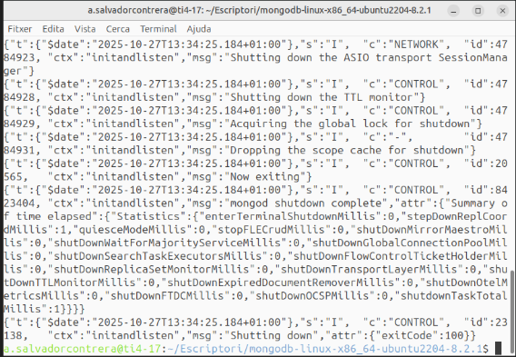
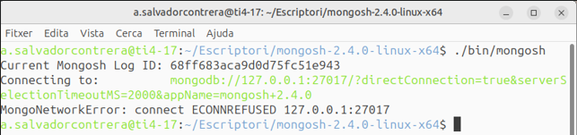
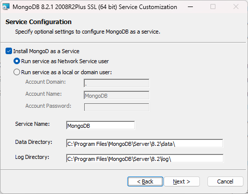

Unidad 3. Acceso a Bases de Datos documentales¶
Revisiones
| Revisión | Fecha | Descripción |
|---|---|---|
| 1.0 | 31-10-2025 | Adaptación de los materiales a markdown |
3.1. Introducción¶
Las bases de datos documentales nativas (como MongoDB, Redis o Firebase) almacenan información en forma de documentos, usualmente codificados en JSON, BSON o XML, en lugar de filas y columnas como en las bases de datos relacionales.
Cada documento puede tener una estructura diferente, lo que permite mayor flexibilidad y agilidad en el desarrollo.
Sin embargo, si el dominio de la aplicación tiene muchas relaciones fuertes entre entidades y se necesita garantizar una integridad referencial estricta, una base de datos relacional puede ser más adecuada.
Ventajas
| Ventaja | Descripción |
|---|---|
| Flexibilidad del esquema | No es necesario definir un esquema fijo antes de insertar datos. Ideal para estructuras dinámicas. |
| Escalabilidad horizontal | Se adaptan bien al escalado distribuyendo los datos en múltiples servidores (sharding). |
| Rendimiento en lectura y escritura | Muy eficiente en operaciones de lectura y escritura sobre documentos completos. |
| Modelo cercano a objetos | Almacenan los datos de manera similar a como se manejan en el código (objetos serializados como JSON). |
| Facilidad de integración con APIs REST | Los documentos JSON pueden ser enviados y recibidos fácilmente a través de APIs. |
| Ideal para datos semiestructurados | Útiles para trabajar con datos que no se ajustan a una estructura tabular, como respuestas de formularios, logs, etc. |
Inconvenientes
| Inconveniente | Descripción |
|---|---|
| Falta de integridad referencial | No hay claves foráneas como en las bases de datos relacionales, lo que puede causar inconsistencias si no se gestiona adecuadamente desde la aplicación. |
| Redundancia de datos | Se repite información entre documentos al no haber normalización; esto puede generar más uso de espacio. |
| Curva de aprendizaje | Requiere aprender nuevos conceptos como agregaciones, operadores específicos y estructuras de documentos. |
| Menor soporte para transacciones complejas | Aunque existen transacciones en algunas bases (como MongoDB), su uso es más limitado que en sistemas relacionales. |
| Consultas menos optimizadas en relaciones complejas | No es la mejor opción cuando los datos necesitan muchas relaciones y joins complejos. |
3.2. MongoDB¶
MongoDB es un sistema de gestión de bases de datos NoSQL orientado a documentos. A diferencia de las bases de datos relacionales, que almacenan la información en tablas con filas y columnas, MongoDB guarda los datos en colecciones formadas por documentos en formato BSON (una representación binaria de JSON).
JSON
JSON (JavaScript Object Notation) es un formato de texto ligero utilizado para almacenar e intercambiar información estructurada entre aplicaciones. Aunque su sintaxis proviene de JavaScript, hoy en día es independiente del lenguaje y se usa ampliamente en entornos como Kotlin, Java, Python, Node.js, bases de datos NoSQL, APIs REST, etc.
Un fichero JSON está compuesto por pares clave–valor, donde:
- Las claves siempre van entre comillas dobles " ".
-
Los valores pueden ser:
- Cadenas de texto ("texto")
- Números (42)
- Booleanos (true o false)
- Objetos (otro conjunto de pares clave-valor { ... })
- Arrays o listas ([ ... ])
- Valor nulo (null)
Ejemplos de estructuras JSON
Objeto simple: Representa un único elemento con propiedades básicas.
{
"nombre": "Pol",
"edad": 21,
"ciudad": "Barcelona"
}
Objeto con array(lista de valores): Incluye un campo que contiene una lista.
{
"nombre": "Pol",
"aficiones": ["libros", "cine", "música"]
}
Objeto con otro objeto anidado: Un campo puede contener a su vez otro objeto JSON.
{
"nombre": "Pol",
"edad": 21,
"direccion": {
"calle": "Mayor",
"ciudad": "Castellón",
"codigo_postal": 12001
}
}
Array de objetos: Cuando necesitamos almacenar varios elementos similares (por ejemplo, una lista de productos o alumnos).
{
"alumnos": [
{ "nombre": "Pol", "nota": 7.6 },
{ "nombre": "Eli", "nota": 8.2 },
{ "nombre": "Mar", "nota": 9.8 }
]
}
Combinación compleja (objetos + arrays + anidamientos): Para representar datos estructurados, como los de una tienda online.
{
"pedido": {
"id": 101,
"fecha": "2025-10-11",
"cliente": {
"nombre": "Pol Casas",
"email": "p.casas@dominio.com"
},
"productos": [
{ "nombre": "Ensalada de piña", "precio": 10.50, "cantidad": 1 },
{ "nombre": "Tarta de manzana", "precio": 3.50, "cantidad": 1 }
],
"total": 14.00
}
}
Array de objetos principales: También se puede usar un array como estructura raíz, por ejemplo, para representar varios registros en un mismo fichero:
[
{ "nombre": "Pol", "edad": 21 },
{ "nombre": "Eli", "edad": 22 },
{ "nombre": "Mar", "edad": 18 }
]
Estructuras básicas de almacenamiento de información
| Concepto | Equivalente en BD relacional | Descripción |
|---|---|---|
| Base de datos | Base de datos | Conjunto de colecciones. |
| Colección | Tabla | Agrupación de documentos relacionados. |
| Documento | Fila (registro) | Unidad básica de almacenamiento. Es un objeto JSON. |
| Campo | Columna | Atributo dentro del documento. |
En MongoDB cada documento es una estructura flexible, parecida a un objeto de programación, donde los datos se organizan en pares clave–valor. Esta flexibilidad permite que cada documento tenga una estructura diferente, lo que hace que MongoDB se adapte fácilmente a los cambios en los datos sin necesidad de modificar esquemas.
Ejemplo 1: Plantas y jardineros
A continuación tenemos información sobre algunas plantas y los jardineros que las cuidan. Dependiendo de cómo se deba acceder a la información, se pueden guardar las plantas con sus jardineros, o los jardineros con las plantas que cuidan.
De la primera manera podríamos tener una colección llamada Plantas. Observa cómo los objetos no tienen por qué tener la misma estructura y, en este caso, la forma de acceder al nombre de un jardinero sería la siguiente: objeto.jardinero.nombre:
{
_id: 301,
nombre: "Rosa silvestre",
tipus: "Arbust",
jardinero: {
nombre: "Eli",
apellidos: "Martínez Serra",
anyo_nacimiento: 1985
},
localitzacio: "Jardí Mediterrani"
},
{
_id: 302,
nombre: "Ficus lyrata",
tipus: "Planta d’interior",
jardinero: {
nombre: "Pol",
apellidos: "Ribas Colomer",
pais: "Espanya"
},
altura: 150,
reg_setmanal: 2
}
De la segunda manera tendríamos la colección Jardineros donde la información estaría organizasa por jardineros y cada uno de ellos tendría un array con las plantas que cuida (los corchetes: [ ]):
{
_id: 401,
nom: "Laura",
cognoms: "Martínez Serra",
any_naixement: 1985,
plantes: [
{
nom: "Rosa silvestre",
tipus: "Arbust",
localitzacio: "Jardí Mediterrani"
},
{
nom: "Lavanda officinalis",
localitzacio: "Parterre aromàtic"
}
]
},
{
_id: 402,
nom: "Jordi",
cognoms: "Ribas Colomer",
pais: "Espanya",
plantes: [
{
nom: "Ficus lyrata",
tipus: "Planta d’interior",
alçada_cm: 150,
reg_setmanal: 2
}
]
}
Instalación y administración
Opciones de instalación y despliegue
| Opción | Descripción | Ideal para |
|---|---|---|
| MongoDB Community Server | Versión gratuita que se instala localmente en Windows, Linux o macOS. | Prácticas locales, entornos educativos. |
| MongoDB en Docker | Se ejecuta como contenedor con docker-compose o comandos docker run. |
Entornos de desarrollo rápidos y reproducibles. |
| MongoDB Atlas | Servicio en la nube oficial de MongoDB. Permite crear clústeres gratuitos o de pago, gestionados por Mongo. | Proyectos web, microservicios, despliegues reales. |
| MongoDB Local + Atlas Sync | Permite sincronizar datos locales con una base remota en Atlas. | Aplicaciones con modo offline/online. |
Herramientas de administración y visualización
| Herramienta | Tipo | Descripción |
|---|---|---|
| MongoDB Compass | GUI oficial | Interfaz gráfica para consultar, insertar y analizar datos. |
| DBeaver | GUI universal | Permite conectarse a Mongo y a otras bases de datos (SQL y NoSQL). |
| Robo 3T (antiguo Robomongo) | GUI ligera | Muy utilizada para tareas básicas de exploración. |
| mongosh | Consola oficial | Shell de comandos moderno (sustituye a mongo). |
De entre todas las opciones posibles para instalar y administrar MongoDB, utilizaremos la versión Community junto con Mongo Shell (mongosh) por su simplicidad, ligereza y adecuación a los objetivos de esta unidad.
Instalación en Linux
Instalación del servidor (Linux)
Desde la página oficial de MongoDB: https://www.mongodb.com/try/download/community vamos al menú Products → Community Edition → Community Server y descargamos la versión apropiada para nuestro sistema operativo.
Es recomendable elegir el paquete .tgz, ya que simplemente descomprimiendo el archivo se completa la instalación básica. Por ejemplo, para Ubuntu 22.04 de 64 bits, en el momento de redactar estos apuntes, el archivo sería: https://fastdl.mongodb.org/linux/mongodb-linux-x86_64-ubuntu2204-8.2.1.tgz
Una vez descargado, descomprimimos el archivo en el lugar que queramos, y con eso ya tendremos la instalación básica lista. Una vez instalado, crearemos el directorio de datos, que por defecto ha de estar ubicado en la raiz de la instalación (si no somos administradores y no tenemos permisos para crear ese directorio, crearemos otro alternativo):
mkdir /data
mkdir /data/db
Para arrancar el servidor (si el directorio de datos está en la raiz de la instalación, es decir, /data/db) hay que ejecutar el siguiente comando:
<directoro raíz de MongoDB>./bin/mongod
Si la base de datos no se encuentra en la raiz de la instalación hay que especificar su ruta en el comando de arranque:
<directorio raíz de MongoDB>./bin/mongod --dbpath <directorio_de_la_BD>
Una vez arrancamos el servidor, y si todo es correcto, aparecerán una serie de mensajes informativos y el servidor quedará en espera de recibir peticiones del cliente:


Una vez que el servidor está en marcha, no debemos cerrar esa terminal, ya que al hacerlo detendríamos el servidor.
Instalación del cliente MongoShell (Linux)
Desde la página de MongoDB https://www.mongodb.com/try/download/shell vamos al menú Products → Tools → MongoDB Shell, y descargamos la versión apropiada para nuestro sistema operativo.
Es recomendable elegir el paquete .tgz, ya que simplemente descomprimiendo el archivo se completa la instalación. En el caso de Ubuntu 22.04 de 64 bits, seleccionaremos la opción genérica “Linux 64”, ya que es la que ofrece el paquete .tgz. El archivo correspondiente es: https://downloads.mongodb.com/compass/mongosh-2.4.0-linux-x64.tgz
Una vez descargado, descomprimimos el archivo en el lugar que queramos, y con eso ya tendremos la instalación básica lista. La forma de arrancar el cliente será:
<directori raíz de Mongosh>./bin/mongosh

Práctica 1: Instala MongoDB en tu ordenador de clase
Sigue los pasos para instalar tanto el servidor como el cliente.
Instalación en Windows
Instalación del servidor (Windows)
Desde la página oficial de MongoDB: https://www.mongodb.com/try/download/community vamos al menú Products → Community Edition → Community Server y descargamos la versión apropiada para nuestro sistema operativo, que se distribuye como un archivo .msi ejecutable.
En el momento de redactar estos apuntes, la versión de 64 bits más reciente: https://fastdl.mongodb.org/windows/mongodb-windows-x86_64-8.2.1-signed.msi
Durante la instalación, se te preguntará si deseas instalarlo como un servicio. Si eliges esta opción, el programa se iniciará automáticamente con el sistema y no tendrás que ejecutarlo manualmente cada vez. Puedes comprobarlo con:
net start | find "MongoDB"
Si eliges no instalar MongoDB como servicio, deberás iniciarlo manualmente cada vez que quieras usarlo. En este caso, es necesario crear la carpeta donde se almacenarán los datos de la base de datos.

Instalación del cliente Mongo Shell (Windows)
Para conectarnos como clientes, debemos hacerlo desde un terminal, utilizando mongosh.exe, que es la interfaz de línea de comandos (CLI) oficial de MongoDB. Esta herramienta permite interactuar con la base de datos mediante comandos en JavaScript.
Descargamos la versión correspondiente de MongoDB Shell para Windows desde la página oficial: https://www.mongodb.com/try/download/shell
En el momento de redactar estos apuntes, la versión de 64 bits más reciente: https://downloads.mongodb.com/compass/mongosh-2.5.8-x64.msi
Una vez el servidor esté activo, simplemente escribe:
mongosh
Dentro del shell, prueba con:
show dbs
Si ves las bases de datos (admin, config, local), todo está funcionando correctamente:

También puedes descargar la versión MongoDB Compass, que es la herramienta gráfica oficial de MongoDB, la cual permite visualizar, explorar y administrar bases de datos MongoDB sin necesidad de utilizar la línea de comandos. https://downloads.mongodb.com/compass/mongodb-compass-1.45.3-win32-x64.exe
Ejemplo 2: Probar el funcionament
Para probar su funcionamiento, vamos a ejecutar un par de comandos: uno para guardar un documento y otro para recuperarlo. En cualquier operación, debemos escribir db seguido del nombre de la colección y después la operación a realizar.
Para guardar un documento ejecutamos el siguiente comando:
db.ejemplo.insertOne({ msg: "Hola, ¿qué tal?" })
Obtendremos una respuesta indicando que se ha insertado un documento en la colección ejemplo (si no existía, la creará automáticamente):
{
acknowledged: true,
insertedId: ObjectId('68ff6004ab24a06f35cebea4')
}
Y con el siguiente comando recuperamos la información:
db.ejemplo.find()
Lo que nos devolverá algo como:
{ "_id" : ObjectId("56cc1acd73b559230de8f71b"), "msg" : "Hola, ¿qué tal?" }
Todo esto se realiza en la misma terminal, y cada uno de nosotros obtendrá un número diferente en el campo ObjectId. En la siguiente imagen pueden verse las dos operaciones.

Podemos crear y utilizar más de una base de datos. En realidad, estamos conectados a una base de datos llamada test. Para comprobarlo, podemos ejecutar la siguiente instrucción, que nos devuelve el nombre de la base de datos actual:
db.getName()
Comandos de MongoDB y su utilización
MongoDB utiliza su propia shell interactiva, llamada mongosh, que permite ejecutar comandos para administrar bases de datos, colecciones y documentos. Su sintaxis es muy similar a JavaScript, ya que cada comando se ejecuta sobre un objeto base:
db.coleccion.operacion()
- db → representa la base de datos actual.
- coleccion → el nombre de la colección sobre la que actuamos.
- operacion() → el comando que deseamos ejecutar.
A continuación se muestran varias tablas con los comandos más útiles para consultar, ordenar, filtrar y gestionar datos en MongoDB.
Comandos sobre bases de datos
| Comando | Descripción | Ejemplo |
|---|---|---|
show dbs |
Muestra todas las bases de datos existentes. | show dbs |
use <nombre> |
Cambia a una base de datos (la crea si no existe). | use biblioteca |
db.getName() |
Muestra el nombre de la base de datos actual. | db.getName() |
db.dropDatabase() |
Elimina la base de datos actual. | db.dropDatabase() |
Comandos sobre colecciones
| Comando | Descripción |
|---|---|
show collections |
Lista todas las colecciones de la base de datos. Ejemplo: show collections |
db.createCollection("nombre") |
Crea una colección vacía. Ejemplo: db.createCollection("alumnos") |
db.coleccion.drop() |
Elimina una colección completa. Ejemplo: db.alumnos.drop() |
db.coleccion.renameCollection("nuevoNombre") |
Cambia el nombre de una colección. Ejemplo: db.alumnos.renameCollection("estudiantes") |
Operaciones básicas
Inserción (Si la colección no existe, MongoDB la creará automáticamente en el momento de la inserción)
| Comando | Descripción |
|---|---|
insertOne() |
Inserta un solo documento. Ejemplo: db.alumnos.insertOne({nombre:"Ana", nota:8}) |
insertMany() |
Inserta varios documentos a la vez. Ejemplo: db.alumnos.insertMany([{nombre:"Luis", nota:7}, {nombre:"Marta", nota:9}]) |
Búsqueda
| Comando | Descripción |
|---|---|
find() |
Devuelve todos los documentos de la colección. Ejemplo: db.alumnos.find() |
findOne() |
Devuelve el primer documento que cumple una condición. Ejemplo: db.alumnos.findOne({nombre:"Ana"}) |
find(criterio, proyección) |
Permite filtrar y mostrar solo algunos campos. Ejemplo: db.alumnos.find({nota:{$gte:8}}, {nombre:1, _id:0}) |
Operadores comunes:
$eq (igual), $ne (distinto), $gt (mayor que), $lt (menor que), $gte (mayor o igual), $lte (menor o igual), $in, $and, $or.
Actualización (Usa $set para modificar solo algunos campos y no perder el resto)
| Comando | Descripción |
|---|---|
updateOne(filtro, cambios) |
Actualiza el primer documento que cumpla la condición. Ejemplo: db.alumnos.updateOne({nombre:"Ana"}, {$set:{nota:9}}) |
updateMany(filtro, cambios) |
Actualiza todos los documentos que cumplan la condición. Ejemplo: db.alumnos.updateMany({nota:{$lt:5}}, {$set:{aprobado:false}}) |
replaceOne(filtro, nuevoDoc) |
Sustituye el documento completo. Ejemplo: db.alumnos.replaceOne({nombre:"Ana"}, {nombre:"Ana", nota:10}) |
Eliminación
| Comando | Descripción |
|---|---|
deleteOne() |
Elimina el primer documento que cumpla la condición. Ejemplo: db.alumnos.deleteOne({nombre:"Luis"}) |
deleteMany() |
Elimina todos los documentos que cumplan la condición. Ejemplo: db.alumnos.deleteMany({nota:{$lt:5}}) |
Consultas avanzadas y ordenación
| Comando | Descripción |
|---|---|
sort() |
Ordena los resultados. 1 ascendente, -1 descendente.Ejemplo: db.alumnos.find().sort({nota:-1}) |
limit() |
Limita el número de resultados. Ejemplo: db.alumnos.find().limit(3) |
countDocuments() |
Devuelve el número de documentos que cumplen un filtro. Ejemplo: db.alumnos.countDocuments({nota:{$gte:5}}) |
Índices
| Comando | Descripción |
|---|---|
createIndex({campo:1}) |
Crea un índice ascendente. Ejemplo: db.alumnos.createIndex({nombre:1}) |
getIndexes() |
Muestra los índices existentes. Ejemplo: db.alumnos.getIndexes() |
dropIndex("nombre_1") |
Elimina un índice. Ejemplo: db.alumnos.dropIndex("nombre_1") |
Información útil del entorno
| Comando | Descripción |
|---|---|
db.stats() |
Muestra estadísticas sobre la base de datos. Ejemplo: db.stats() |
db.coleccion.stats() |
Muestra estadísticas sobre una colección. Ejemplo: db.alumnos.stats() |
db.version() |
Devuelve la versión de MongoDB. Ejemplo: db.version() |
Ejemplo 1: Ejemplo completo
use florabotanica
db.plantas.insertMany([
{nombre_comun:"Aloe", nombre_cientifico:"Aloe", altura:30},
{nombre_comun:"Pino", nombre_cientifico:"Pinus", altura:330},
{nombre_comun:"Cactus", nombre_cientifico:"Cactae", altura:130}
])
db.plantas.find()
db.plantas.updateOne({nombre_comun:"Aloe"}, {$set:{altura:35}})
db.plantas.find({altura:{$gte:130}})
db.plantas.deleteOne({nombre_comun:"Cactus"})
Consultas avanzadas con aggregate()
El método aggregate() permite realizar consultas complejas y procesamientos de datos en varias etapas, similares a las funciones de GROUP BY, JOIN o HAVING en SQL. Cada etapa del pipeline (tubería) transforma los datos paso a paso. Cada etapa (stage) se representa mediante un objeto precedido por $, que indica la operación a realizar.
Estructura básica
db.coleccion.aggregate([
{ <etapa1> },
{ <etapa2> },
...
])
| Etapa | Descripción |
|---|---|
$match |
Filtra documentos (equivalente a WHERE).Ejemplo: { $match: { ciudad: "Valencia" } } |
$project |
Selecciona campos específicos o crea nuevos. Ejemplo: { $project: { _id:0, nombre:1, nota:1 } } |
$sort |
Ordena los resultados. Ejemplo: { $sort: { nota: -1 } } |
$limit |
Limita el número de resultados. Ejemplo: { $limit: 5 } |
$skip |
Omite un número de documentos. Ejemplo: { $skip: 10 } |
$group |
Agrupa los documentos por un campo y calcula valores agregados (como COUNT, SUM, AVG).Ejemplo: { $group: { _id: "$curso", media: { $avg: "$nota" } } } |
$count |
Devuelve el número total de documentos resultantes. Ejemplo: { $count: "total" } |
$lookup |
Realiza una unión entre colecciones (similar a JOIN).Ejemplo: { $lookup: { from: "profesores", localField: "idProfesor", foreignField: "_id", as: "infoProfesor" } } |
$unwind |
Descompone arrays en múltiples documentos. Ejemplo: { $unwind: "$aficiones" } |
Resumen
| Categoría | Comandos clave |
|---|---|
| Base de datos | show dbs, use, db.getName(), db.dropDatabase() |
| Colecciones | show collections, db.createCollection(), db.coleccion.drop() |
| Inserción | db.coleccion.insertOne(), db.coleccion.insertMany() |
| Consulta | db.coleccion.find(), db.coleccion.findOne(), .sort(), .limit() |
| Actualización | db.coleccion.updateOne(), db.coleccion.updateMany(), $set |
| Eliminación | db.coleccion.deleteOne(), db.coleccion.deleteMany() |
| Índices | db.coleccion.createIndex(), db.coleccion.getIndexes(), db.coleccion.dropIndex() |
| Estadísticas | db.stats(), db.coleccion.stats(), db.version() |
import java
}
Prueba y analiza el ejemplo 1
- Crea
Práctica 2: Crea tu
- Crea un nu.
Entrega 1
Entrega en Aules la carpeta main de tu proyecto comprimida en formato .zip
**IMPORTANTE**: El proyecto no debe contener código que no se utilice, ni restos de pruebas de los ejemplos y no debe estar separado por prácticas. Debe ser un proyecto totalmente funcional.
3.3. Firebase¶
En construcción
Prueba y analiza el ejemplo 5
Prueba el código de ejemplo y verifica que funciona correctamente.
Práctica 5: Amplía tu proyecto
Incluye .
Entrega 2
Entrega en Aules la carpeta main/kotlin de tu proyecto comprimida en formato .zip
**IMPORTANTE**: El proyecto no debe contener código que no se utilice, ni restos de pruebas de los ejemplos y no debe estar separado por prácticas. Debe ser un proyecto totalmente funcional.
Autoría
Obra realizada por Begoña Paterna Lluch basada en materiales desarrollados por Alicia Salvador Contreras. Publicada bajo licencia Creative Commons Atribución/Reconocimiento-CompartirIgual 4.0 Internacional